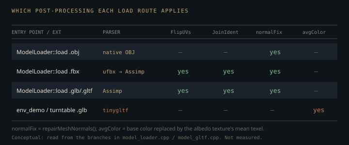

Monograph · Tree · ← Module hub · Asset loaders
scene
Asset loaders
GLTF (tinygltf), FBX (Assimp), OBJ custom, primitives.
Two front doors, four parsers
The same `.glb` file does not take the same code path through OHAO twice. `ModelLoader::load` sends `.obj` to the hand-written parser, `.fbx` to ufbx, and everything else, GLB and GLTF included, to Assimp. `inverse/scene_builder.hpp` calls it directly; the two viewers reach it through the `Result`-returning `loadResult` wrapper, which adds an empty-path guard, an extension check and an empty-result check, and nothing else.
// GLB, GLTF, DAE, etc → Assimpohao/scene/asset/model_loader.cpp:169if (auto r = ModelLoader::loadResult(modelPath)) {examples/interactive.cpp:182The tinygltf importer in `model_gltf.cpp` is therefore unreachable from the facade — but it is not dead. `env_demo` and `turntable` call `Model::loadFromGLTF` directly, skipping `ModelLoader` entirely.
else loaded = model->loadFromGLTF(modelPath);examples/env_demo.cpp:255So there are two glTF importers on two entry points, and they do not agree. The Assimp route flips the V coordinate on import; the tinygltf route copies `TEXCOORD_0` through untouched. Only one of those can be right for a given sampler convention, and nothing in the tree reconciles them.
aiProcess_FlipUVs |ohao/scene/asset/model_loader.cpp:283
Why FBX is parsed twice
FBX is the only format OHAO parses with two libraries in sequence, and the reason is a genuine split of competence. ufbx is asked first for the reason the branch comment gives — rotation orders and embedded textures — and it does the coordinate work at load time: it converts the scene to right-handed Y-up and to meters, and it applies each mesh's `geometry_to_node` transform. That is the whole recorded justification — the tree states a preference, not a measured comparison against Assimp.
// Try ufbx first (correct rotation orders, embedded textures)ohao/scene/asset/model_loader.cpp:145opts.target_axes = ufbx_axes_right_handed_y_up; // Convert to Y-upohao/scene/asset/model_fbx.cpp:94What ufbx hands back is topologically useless. The extraction loop appends a fresh vertex for every triangle corner, so vertex count equals index count exactly — triangle soup, in which no vertex is adjacent to any face but its own.
indices.push_back(static_cast<uint32_t>(vertices.size()));ohao/scene/asset/model_fbx.cpp:295That is why the whole file is then read a second time through Assimp, purely for `aiProcess_JoinIdenticalVertices` and friends, and the ufbx geometry is thrown away. Only the textures are kept, and the test that keeps them is narrower than it reads: it fires on Assimp's *albedo* list being empty, then moves the whole ufbx texture set across — normal, rough-metal and emissive vectors and all four index arrays — over whatever Assimp had. A file where Assimp found a normal map but no base color loses that normal map to a ufbx set that may not contain one.
if (assimpModel->albedoTextures.empty() && !model->albedoTextures.empty()) {ohao/scene/asset/model_loader.cpp:154assimpModel->normalTextures = std::move(model->normalTextures);ohao/scene/asset/model_loader.cpp:156The obvious alternative — welding the ufbx output ourselves with a position/normal/UV hash — was not taken. Assimp already ships a tested welder plus degenerate-face removal, cache-locality reordering and infacing-normal repair, so a second full parse buys four passes for one dependency call. The cost is that this is the one route where two libraries' material *orderings* are assumed to match: when the texture guard above fires, `materialTextureIndex` is grafted from ufbx (indexed by `typed_id`) onto geometry whose `materialPerTriangle` uses Assimp's indices, and nothing checks that they agree.
The normal repair that also erases hard edges
Every model that comes out of `ModelLoader::load` — not just FBX — is run through `repairMeshNormals`. On the FBX route that means the *Assimp* geometry: the reassignment happens first, so the repair never touches ufbx's triangle soup.
model = assimpModel;ohao/scene/asset/model_loader.cpp:165It buckets vertices by quantised position using an FNV-1a hash of the integer cell coordinates, with a cell edge of one hundred-thousandth of the mesh diagonal:
float cellSize = meshSize * 1e-5f; // ~0.001% of mesh sizeohao/scene/asset/model_loader.cpp:74Face normals are accumulated per bucket as raw cross products. Because $\lVert (p_1-p_0)\times(p_2-p_0)\rVert$ equals twice the triangle area, skipping the normalisation makes the accumulation area-weighted for free — large triangles pull the vertex normal toward their plane in proportion to their area, which is what you want and what a naive normalise-then-sum gets wrong.
The subtlety is that the result is written back unconditionally, to every vertex whose position bucket exists:
v.normal = it->second;ohao/scene/asset/model_loader.cpp:124The triangle-soup detection nearby looks like it gates the repair. It does not — it only decides whether a log line is printed.
if (isTriangleSoup || changed > vertices.size() / 10) {ohao/scene/asset/model_loader.cpp:129The consequence is concrete: a cube exported with 24 vertices and six flat face normals still has only 8 distinct *positions*, so the three normals meeting at each corner are averaged into one. Hard creases cannot survive this function. Anything authored with split normals loses them the moment it goes through the facade — while the same file loaded via `loadFromGLTF` keeps them, because that path never calls the repair.
Nobody walks the node tree
None of the loaders traverse the scene graph. The Assimp path checks `mRootNode` for null and then iterates `scene->mMeshes` linearly, concatenating raw mesh-local vertices with a running offset:
uint32_t globalVertexOffset = 0;ohao/scene/asset/model_loader.cpp:385The tinygltf path does the same, iterating `gltfModel.meshes` rather than `gltfModel.scenes`/`nodes`:
for (const auto& mesh : gltfModel.meshes) {ohao/scene/asset/model_gltf.cpp:163A file whose meshes are positioned by node transforms — a wheel parented under a hub — therefore imports with every part at its mesh-local coordinates, piled at the origin. Instancing degrades a different way: the loop visits each `aiMesh` exactly once, so a mesh referenced from several nodes contributes one copy however many times the file instances it. Only ufbx contributes any transform at all, and only the *geometry* transform of the mesh's first instance, never node-to-world.
geoTransform = toGlm(mesh->instances.data[0]->geometry_to_node);ohao/scene/asset/model_fbx.cpp:231Up-axis correction is not in this module either. It lives downstream in `SceneFramer`, which decides Y-up versus Z-up by comparing the bounding box's Y and Z extents and, on the Z-up verdict, emits a ±90° rotation about X — sign picked by whether the Z range reaches above zero. That rotation comes back in `FrameResult` and both viewers set it on the model actor's transform, so it really does reorient the geometry; it is simply decided outside `scene/asset`, from extents rather than from any up-axis metadata the file carried.
result.modelRotation = glm::quat(glm::radians(glm::vec3(posZIsUp ? -90.0f : 90.0f, 0, 0)));ohao/render/camera/scene_framer.cpp:58actor->getTransform()->setRotation(frame.modelRotation);examples/interactive.cpp:276Roughness arrives by four different roads
All four loaders land their answer in the same slot, `materialColors[i].w`, and from there in the RT material buffer. Three of them read an authored roughness factor first; what separates them is the fallback, and the fallbacks do not agree. Let $g\in[0,1]$ be an authored glossiness and $N_s$ a Phong specular exponent. The second formula belongs to the Assimp route alone, which reads $N_s$ from `AI_MATKEY_SHININESS`; its domain is GLB/GLTF/DAE plus the FBX second pass, never OBJ, which is branched to the native parser before Assimp is reached.
ufbx takes `pbr.roughness` when the material has it, inverting it in place if ufbx flags the file as storing roughness-as-glossiness; failing that it takes $1-g$ from `pbr.glossiness`; failing that, if only a roughness or gloss *texture* exists with no scalar beside it, it stamps 1.0 and lets the texture carry the whole range. Only then does it clamp up to 0.04.
if (mat->pbr.roughness.has_value) {ohao/scene/asset/model_fbx.cpp:131roughness = std::max(roughness, 0.04f);ohao/scene/asset/model_fbx.cpp:145The only rationale the tree gives for that floor is physical and dielectric-scoped — no firefly or sampling argument is recorded anywhere, and the bound does not generalise past dielectrics. The closest-hit shader re-applies the identical clamp after texture modulation, so on the RT path the loader-side floor is redundant; it matters only to code that reads `materialColors` without going through that shader.
// Physical minimum: no real dielectric surface has roughness < 0.04ohao/scene/asset/model_fbx.cpp:144roughness = max(roughness, 0.04);shaders/rt/pt_closesthit.rchit:148The Assimp route reads `AI_MATKEY_ROUGHNESS_FACTOR` first and remaps shininess only if that left the variable at its 0.5 initialiser — an exact float equality against a sentinel, so a material that genuinely authors roughness 0.5 has it silently overwritten by the shininess conversion. The remap itself is not derived from anything: the standard Phong-to-GGX correspondence is $\alpha=\sqrt{2/(N_s+2)}$, and dividing by 1000 instead means an $N_s$ of 100 — a fairly tight highlight — imports as roughness 0.9.
if (roughness == 0.5f && mat->Get(AI_MATKEY_SHININESS, shininess) == aiReturn_SUCCESS) {ohao/scene/asset/model_loader.cpp:326tinygltf copies `pbr.roughnessFactor` straight through, then, for the `KHR_materials_pbrSpecularGlossiness` materials that CC3 exports, overwrites it with $1-g$ from `glossinessFactor`. It applies no floor of its own, so the shader's clamp is the only one this route ever sees.
static_cast<float>(pbr.roughnessFactor)ohao/scene/asset/model_gltf.cpp:351materialColors.back().w = 1.0f - glossiness; // roughness = 1 - glossinessohao/scene/asset/model_gltf.cpp:376OBJ is the fourth road and reads nothing. Its MTL parser does store `Ns` in `MaterialData::shininess`, but the only code that converts it — `Scene::importModel`, with a $1-N_s/128$ remap — has no callers anywhere in the tree; the RT material build ignores the field and stamps every material with 0.7.
else if (token == "Ns") {ohao/scene/asset/model.cpp:472pbrMaterial.roughness = glm::clamp(1.0f - (mtlMaterial.shininess / 128.0f), 0.0f, 1.0f);ohao/scene/scene.cpp:336materialColors.push_back(glm::vec4(mat.diffuse, 0.7f));ohao/scene/asset/model.cpp:246Per-texel roughness only appears if a `{material}_gloss_*` image is sitting beside the model, which the loader inverts and repacks into the green channel of a rough-metal texture. That lands where the closest-hit sampler looks — but the sampler *multiplies*, against that 0.7 scalar. A gloss-mapped OBJ therefore cannot exceed roughness 0.7 at any texel, and every texel is scaled to 70% of its authored value rather than used as authored.
packed[i * 4 + 1] = 255 - gloss; // roughness = 1 - glossohao/scene/asset/model.cpp:316roughness *= rm.g; // G channel = Roughnessshaders/rt/pt_closesthit.rchit:145The base color that eats itself
The tinygltf path does one thing no other loader does: after decoding an albedo texture it computes the mean of its texels and writes that back over the material's base color.
// Override the material base color with the texture's average colorohao/scene/asset/model_gltf.cpp:422That base color is not an alternative to the texture — the closest-hit shader multiplies them:
albedo *= pow(sampled, vec3(2.2));shaders/rt/pt_closesthit.rchit:112So a glTF with the spec-default `baseColorFactor` of 1 renders through `ModelLoader::load` at its authored albedo, and through `env_demo`/`turntable` at roughly (mean texel) × (texel) — visibly darker, and darker in proportion to how dark the texture already is. This is the sharpest of the divergences in the figure above, and the reason to treat the tinygltf route as legacy.
The primitive generator that nothing calls
`PrimitiveMeshGenerator` has no callers in `ohao/`, `examples/` or `tests/`. Its live twin is `ComponentFactory::generateCubeMesh` and siblings, which duplicate the same cube and UV-sphere construction inside the component layer. Worth recording before anyone deletes the wrong one: the *unused* class implements a real cylinder and a real cone, while the *used* one stubs both out.
// TODO: Implement proper cylinder mesh generationohao/scene/component/component_factory.cpp:487void PrimitiveMeshGenerator::generateCylinder(Model& model, float radius, float height, int segments) {ohao/scene/asset/primitive_mesh_generator.cpp:225What actually crosses into the GPU layer
`scene/asset` contains no `VkDevice`, no `vkCreate*` and no command recording. The decoupling that buys is latent, not exercised: nothing under `tests/` or `tools/` loads a model, and the engine suite reaches only the pure `isSupportedExtension` predicate. It is not Vulkan-free either — `Vertex` declares its own `VkVertexInputAttributeDescription` set, so the vertex layout is authored here and merely consumed by the pipeline code.
EXPECT(!ModelLoader::isSupportedExtension("exe"), "exe no");tests/engine/engine_tests.cpp:462That layout carries dead weight. Skeletal animation was removed, but `boneIndices` and `boneWeights` remain in the struct and are still filled by all three of the ufbx, Assimp and tinygltf paths — 32 of every 100 bytes per vertex, uploaded to the GPU, read by nothing.
glm::ivec4 boneIndices{0, 0, 0, 0}; // Up to 4 bone influences per vertexohao/scene/asset/model.hpp:25The loaders' real output is not a mesh, it is a material table: six per-material arrays — `materialColors` (rgb + roughness in `.w`), `materialMetallic`, and the four texture-index arrays `materialTextureIndex`, `materialNormalTexIndex`, `materialRoughMetalTexIndex`, `materialEmissiveTexIndex` — plus `materialPerTriangle`, which is *not* parallel to them. It carries one entry per triangle and indexes into them. The RT builder walks the six by material id and the seventh by triangle, so every loader must fill all seven under one consistent material numbering, or the path tracer shades the wrong triangles with the wrong textures.
matColors[matIdx * 3 + 1].x = mc2.w; // roughness packed in .w of materialColorsohao/gpu/vulkan/rt_build.cpp:356int emIdx = model->materialEmissiveTexIndex[matIdx];ohao/gpu/vulkan/rt_build.cpp:514for (uint32_t mid : model->materialPerTriangle) {ohao/gpu/vulkan/rt_build.cpp:211Contracts
- `materialPerTriangle.size()` must equal `indices.size()/3` at every exit. The OBJ path's alpha-card filter drops `fur`/`eyelash`/`tear` triangles *before* the per-triangle array is built, which is the only ordering that keeps this true.
- `materialColors[i].w` is roughness, not alpha. `rt_build.cpp` reads it into the RT material buffer's roughness slot with no conversion.
- OBJ material indices are assigned while iterating an `unordered_map`, so the numbering is hash order. It is self-consistent within a run, but never persist an OBJ material index across builds.
- `repairMeshNormals` runs on every `ModelLoader::load` result and overwrites author-supplied normals. On the FBX route it never sees ufbx geometry: `model` is reassigned to `assimpModel` before the repair call, so it operates on Assimp's already-welded `GenSmoothNormals` output. Moving the repair above that reassignment would run it on triangle soup and then throw the result away. Adding a "skip if the model already has good normals" guard is not a no-op either — it would hand hard creases back to every model that currently loses them through the facade.
- `Model::loadFromFBX` is ufbx, not Assimp, despite the header comment in `model.hpp` still saying "Assimp-based".
Source files
ohao/scene/asset/model_loader.cppexamples/interactive.cppexamples/env_demo.cppohao/scene/asset/model_fbx.cppohao/scene/asset/model_gltf.cppohao/render/camera/scene_framer.cppshaders/rt/pt_closesthit.rchitohao/scene/asset/model.cppohao/scene/scene.cppohao/scene/component/component_factory.cppohao/scene/asset/primitive_mesh_generator.cpptests/engine/engine_tests.cppohao/scene/asset/model.hppohao/gpu/vulkan/rt_build.cppohao/scene/asset/model_loader.hppohao/scene/asset/primitive_mesh_generator.hppParent hub for the full pipeline narrative; this page is the file-level design unit. Sitemap · hover glossary terms anywhere.